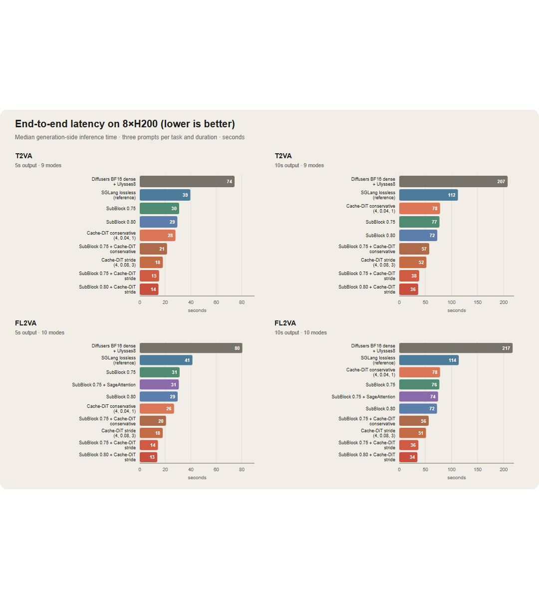
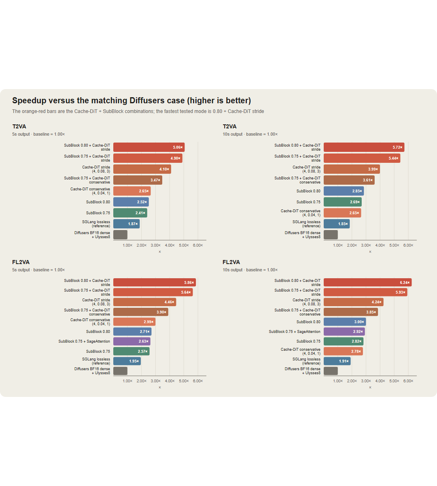
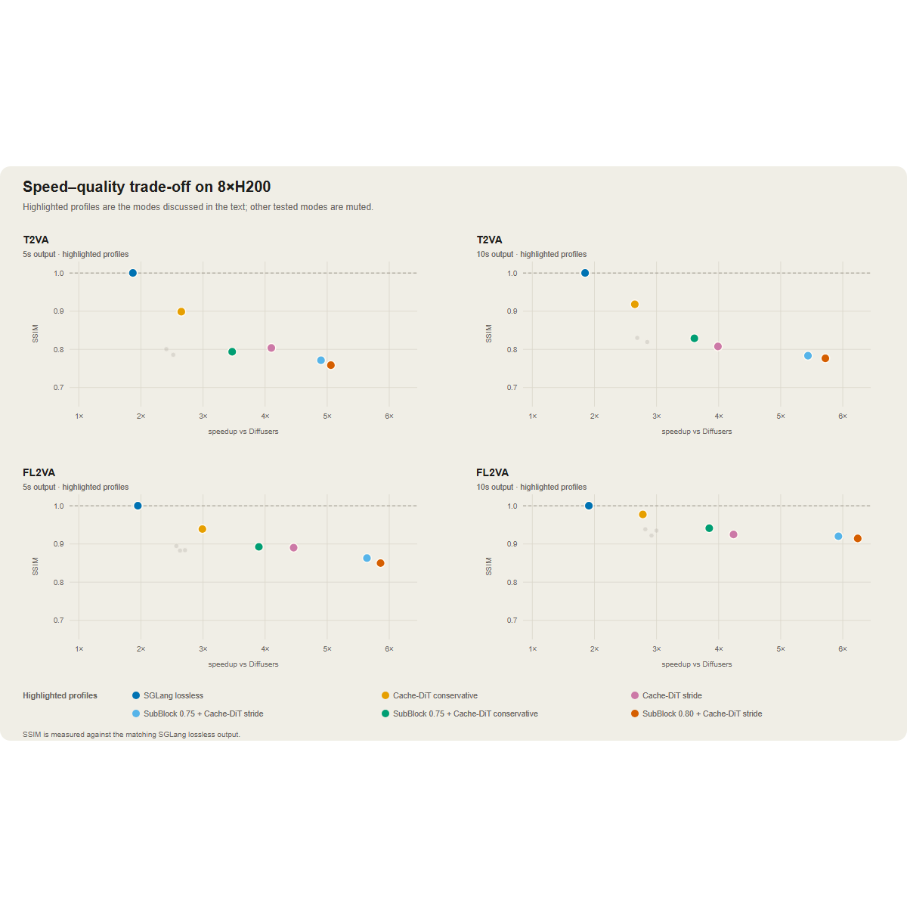
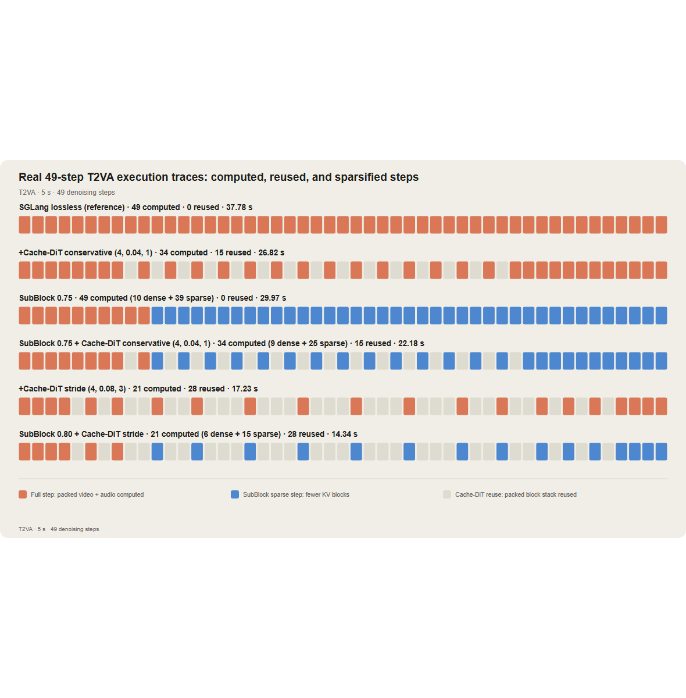
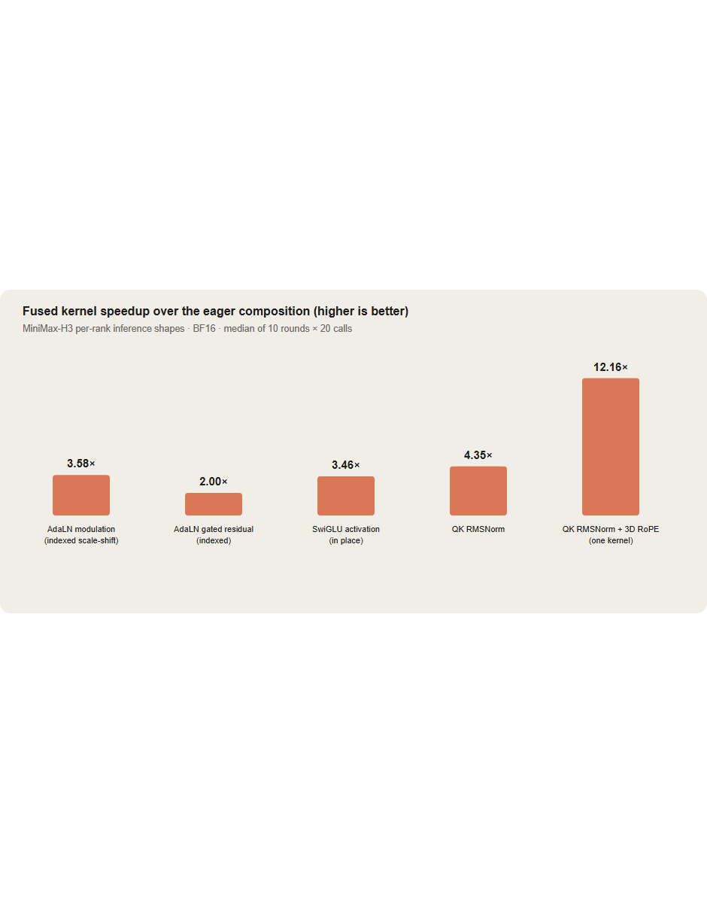
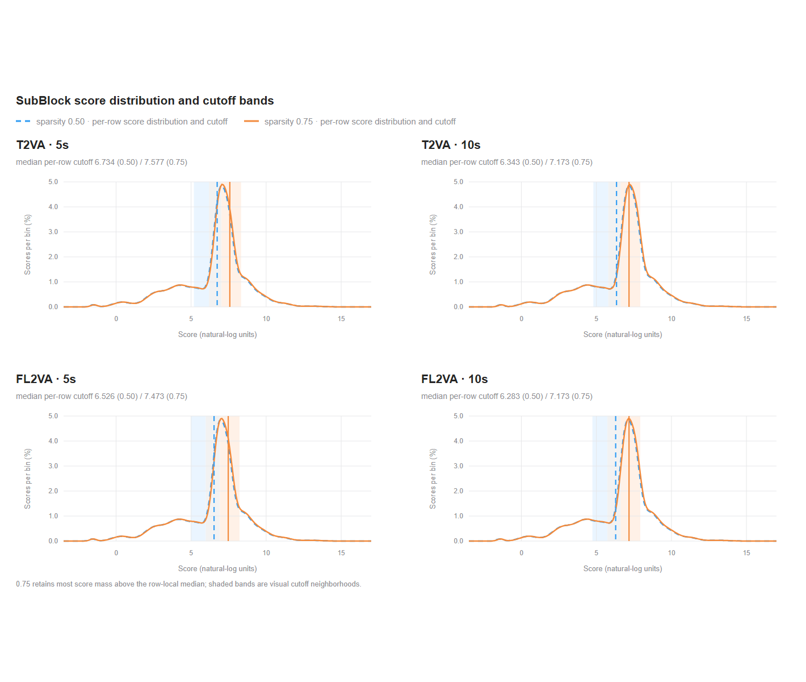

我们在8× NVIDIA H200上，用SGLang Diffusion对MiniMax-H3视频生成做了基准测试：六个工作负载固定prompt、seed、分辨率、帧率、去噪步数。
对比覆盖SGLang Diffusion的三个加速knobs（它还支持更多有损路径：量化、渐进分辨率等没有包含在本轮里，所以这里的数字是可实现的子集、不是天花板）。一切是实测而非预估；文末的clip让你自己判断质量代价。
摘要：无损约2×（相对匹配的Diffusers基线）；平衡速度/质量的SubBlock 0.75 + Cache-DiT stride达4.90–5.64×（5s）/5.44–5.93×（10s）。
TL;DR：我们在8× NVIDIA H200上用SGLang Diffusion对MiniMax-H3视频生成做了基准，六个工作负载固定prompt/seed/分辨率/帧率/去噪步数。

范围：对比覆盖SGLang Diffusion的三个加速knobs。它还支持更有损的路径：量化、渐进分辨率等不在本轮，所以这里数字是可实现包络的切片、不是天花板。全部为实测非预估；文末clip让你自己判断质量代价。

虽然SGLang Diffusion已为MiniMax-H3提供快速无损路径，社区一直期待更快的高质量有损视频生成。SGLang Diffusion基于其长期积累的可塑有损加速knobs栈积极工作于过去几周；本文是第一篇这些knobs落地后的实测记录。
视频扩散由两大成本主导：去噪循环把同一个transformer跑几十次，且每步大部分预算花在超长token序列的注意力。一个5秒1344×768 clip（24 FPS、50个去噪步）远超单GPU可行点：问题不是要不要并行、而是能避免多少剩余工作。
三个加速从不同方向进攻、且可组合：
第一个无损；另两个用相似度换速度：这就是为什么本文每个数字都附相对无损基线的SSIM。
答案取决于基线。相对匹配的Diffusers案例，SGLang的稠密无损路径对两任务两时长都已是约2×。Cache-DiT复用去噪步之间的工作，SubBlock稀疏注意力降低仍在跑的步的成本：合起来构成这个矩阵里最快的路径。
质量优先的加速默认：用Cache-DiT conservative或Cache-DiT stride（不加SubBlock）。平衡速度/质量：用SubBlock 0.75 + Cache-DiT stride：5s给4.90–5.64×、10s给5.44–5.93×。
每个配置都可用SGLang的MiniMax-H3 cookbook页复现（带各模式精确启动flags）。我们报告生成侧推理时间；排除server启动、warmup、HTTP轮询、MP4下载时间。每任务每时长时延与SSIM在三个不同prompt上评估；提速相对匹配的Diffusers案例；SSIM相对匹配的SGLang无损视频在所有帧上算（YUV420）。
下面的图表汇总了聚合基准表（本节的At a Glance架构图与关键词见原文）。

T2VA / FL2VA：每个任务在每个时长跨三个prompt测latency和SSIM。两个任务（text-to-video、frame-to-video）两时长（5s/10s）的详细吞吐数字见原文表格。
Key takeaways：无损路径约2×（相对Diffusers）；Cache-DiT复用跨步工作、SubBlock降每步成本；平衡配置SubBlock 0.75+stride达 ~5×；质量优先用Cache-DiT conservative/stride。标题与图表中的上端数字（最高6.24×、SSIM 0.76–0.91）对应最激进的稀疏/缓存配置行。
三个机制驱动profile级增益。

Fused kernels降低每个仍在跑的步的成本。H3路径把indexed AdaLN更新、gated residuals、SwiGLU激活、QK RMSNorm与3D RoPE融合，减少中间张量、内存流量和kernel启动。下一节给分离的kernel测量；它们是每步实现的一部分，而Cache-DiT和SubBlock决定这套实现被执行多少。
Cache-DiT对MiniMax-H3的共享DiT block stack附一个DBCache上下文。warmup后评估配置的boundary blocks、比较归一化残差变化与前缓存状态。变化低于阈值且连续缓存上限允许时，中间块复用缓存结果；否则重算stack并刷新缓存。所有cache模式用Fn=1、Bn=0、四个warmup步。MiniMax-H3只有一个MiniMaxH3DiTModel、block stack带打包的video+audio token：所以Cache-DiT对整个打包栈做一个共享决策、不维护独立video/audio缓存；worker记录一个合并的Cache-DiT步表。
SubBlock稀疏注意力 降低已计算步的KV块读取。用n_k=n_q=4；前十步去噪用稠密注意力、之后启用SubBlock；最小序列长4096。矩阵测sparsity 0.75与0.80：后者更快但在若干T2VA案例SSIM更低。
聚合profile结果显示各profile端到端行为；不分离kernel时间、也不给每步成本细分。工作量配50个推理步；因sigma schedule含两个区间端点，去噪循环执行49次模型评估（len(sigmas)-1）；「49步trace」指这些模型评估。
为让执行模式具体化，一个5秒T2VA请求跑六个profile：lossless、Cache-DiT conservative、SubBlock 0.75、SubBlock 0.75 + conservative Cache-DiT、Cache-DiT stride、SubBlock 0.80 + stride。worker记录每请求实际的cached_steps列表。因video/audio token共享一个打包H3 block stack，cache hit复用合并输出；此路径无独立的「video缓存、audio计算」态。SubBlock行的蓝色格子标记前十步之后用稀疏注意力的计算步骤。
trace运行时间：37.78s（lossless）、26.82s（Cache-DiT conservative）、29.97s（SubBlock 0.75）、22.18s（SubBlock 0.75+conservative Cache-DiT）、17.23s（Cache-DiT stride）、14.34s（SubBlock 0.80+stride）。这些标识trace运行、不代表三prompt聚合中位数。
Caching决定多少去噪步运行；kernels决定每步多快。MiniMax-H3把video/audio token打进一个序列，非GEMM路径全程受益同一基本原则：更少内存流量、更少中间张量、更少kernel启动。AdaLN modulation和gated residuals按token索引查参数、单pass更新激活；SwiGLU直接在融合gate_up buffer上操作；QK RMSNorm和3D RoPE融合进单核、而非独立eager操作。
下表用真实的per-rank shape（5秒T2VA请求、1344×768×124帧）：SP/Ulysses-8 padding后4,722行、hidden size 5,376、56注意力头、head dim 128、RoPE dim 96、BF16输入。每数字是10轮×20次调用里每次调用的CUDA-event时间中位数；基线是对应的eager组合。

这些是隔离位点的微基准、不是可叠加的端到端时延节省。融合QK-Norm+RoPE的结果用main上可用的exact-rounding路径（round_norm_before_rope=True）。
（各融合算子的具体加速倍数见原图5的kernel-speedup-chart。）
SubBlock是训练-free的块稀疏注意力路由器。把序列分成64-token query和key块，再把每块两侧各分成四个16-token子块（n_q=n_k=4）。轻量pooling和log-sum-exp score估计每个key块对每个query块和head的未归一化softmax mass。路由器保留最高分的key块、把它们的索引传给块稀疏注意力kernel；完整注意力矩阵从不物化。

sparsity值是被允许丢弃的key块比例、不是保留比例。所以sparsity=0.75对每个query块保留约25% 的key块。更激进的0.80更快但有更大的近似误差预算：与最激进行观察到的更低SSIM一致。
曲线显示分数分布；垂直线显示两个展示预算的逐行路由截止中位数。这里sparsity=0.50作为诊断参考；基准profile用0.75和0.80。因为路由器对每query块和每head独立排名key块，sparsity=0.50/0.75大致保留该行前一半/前四分之一可用key块（受8块预算取整约束）。跨这些工作负载，0.75预算保留行局部中位数以上的大部分分数质量、同时把选择集中到高分尾。
稀疏路径只对kernel支持的长、非因果DiT注意力调用启用：BF16输入、head dim 128、至少4096 token。前十去噪步用稠密；短段、token refiner、不支持的调用走稠密fallback。H200/SM90上，选定的64×64路由计划由SGLang的CuTe block-sparse FlashAttention kernel执行。
demo集为每选中prompt含四种模式：SGLang lossless、Cache-DiT conservative、SubBlock 0.75+Cache-DiT stride、SubBlock 0.80+Cache-DiT stride。文件名为prompt/task/mode/duration编码。四个模式对应：Prompt 1·T2VA·5s、Prompt 2·T2VA·10s、Prompt 3·FL2VA·5s（原clip见文末链接）。
本基准是多个团队合作的结果，感谢所有参与者。
免责/备注：2026-08-18实测于8× NVIDIA H200；复现细节与逐prompt原始数据在基准仓库。
参考：https://www.lmsys.org/blog/2026-08-27-minimax-h3-h200